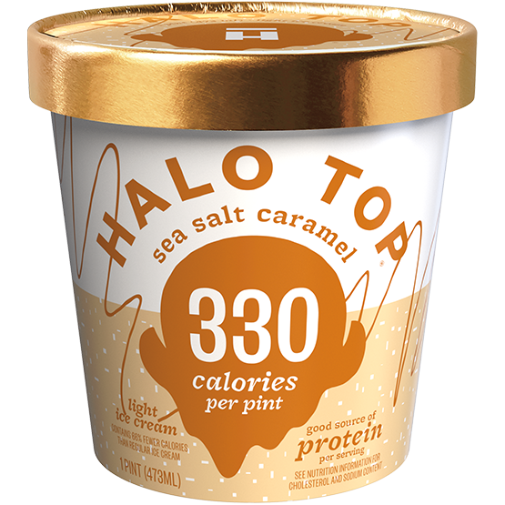

Halo Top
A Review

Top 4 Flavors
- Sea Salt Caramel
- Peanut Butter Cup
- Strawberry
- Blueberry Crumble
Worst 3 Flavors
- Peanut Butter & Jelly
- Mint Chip
- Peaches and Cream*
*You may like Peaches and Cream, I personally don't like it because it tastes more like oranges than cream, though it doesn't have any orange in it, and I don't like orange. It's just a personal preference that landed it on the worst 3 list.
Honorable Mentions: Recommendations
- Oatmeal Cookie
- Birthday Cake
- Vanilla Bean*
*Vanilla Bean is a good, solid, strong vanilla flavor with the little brown vanilla bean flecks in it. If you like vanilla bean ice cream, this one's for you!
Other Flavors: Would Not Recommend
- Candy Bar
- Cookies and Cream